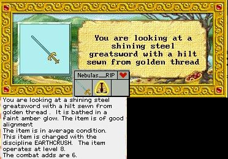 |
The Excali is one of the best swords in game for any
GS player, But is also one of THE HARDEST to get. If you want one, be ready
for a trip to N-10 (not sure on if the correct LVL) but is what I was told.
There you have to face the Wardens. Not a nice place. |
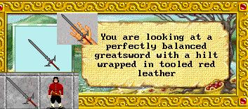 |
Berovar Sword This is not really a rare sword, just hard to get.
You have to be a big player to get one of these babies. As promised I wont
give out any info on it or where it comes from, or even who gave me the
pic. Also hits reallllly hard. |
|

 
|
Defence Weapons - Sword, Axe, and Hally These are only found in aleria, not great for hitting
power but nice in protection. |
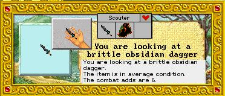 |
Obsidian Dagger This dagger is found in aleria. From what I understand,
its super rare and a thiefs best friend. Does alot of damage when you get
BS by it. I have heard rumor of one going for about 15megs but that is just
rumor. |
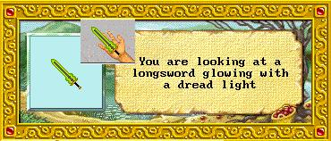 |
Dread Sword I would KILL for one of these babies. This probably
one of the Sweetest sword IMO in the game. It may not be the best but it
just ROCKS the way it looks. If I had 30megs I would be willing to buy one
just to say I have one. Found in aleria. |
 |
Koss Mace Not rare but alot of ppl dont see these just floating
around. If I have undstood what I was told, when this mace hits it takes
a % of the HP and pools them to you. |
 |
Silver Short Sword Rare Silver shortsword found in aleria, This weapon
ties upon contact. Very valuable, I have been offer 10megs for one. Good
luck finding one though. |
|
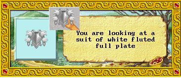
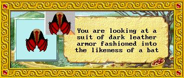
|
Hag Plate, Hag Robe Since these both come from the same mean, nasty crit.
I thought it would be fitting to put them together. The Sea Hag, her name
has been the last name seen by alot of newbies right before they died in
her lair.
Each one is different, but both VERY nice to have. These two items if worn
by a player shows they have earned the right to be respected.
|
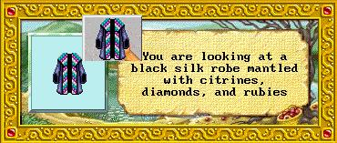 |
Easter Robe Only found during easter, has high fire and ice protection
and from what i understand decent physical protection. I hope to get one
sometime. |
 |
Feather Duster? hehe Not a whole lot know about this thing
I was told that it acts like a Reggie, but im not sure on this. |
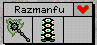 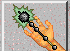 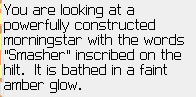 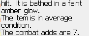 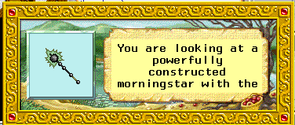 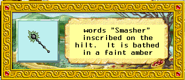 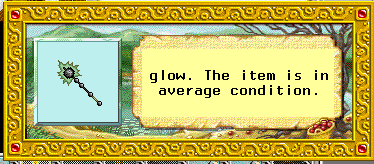 |
Smasher Mace This isnt a Rare, but kewl to look at :-) |